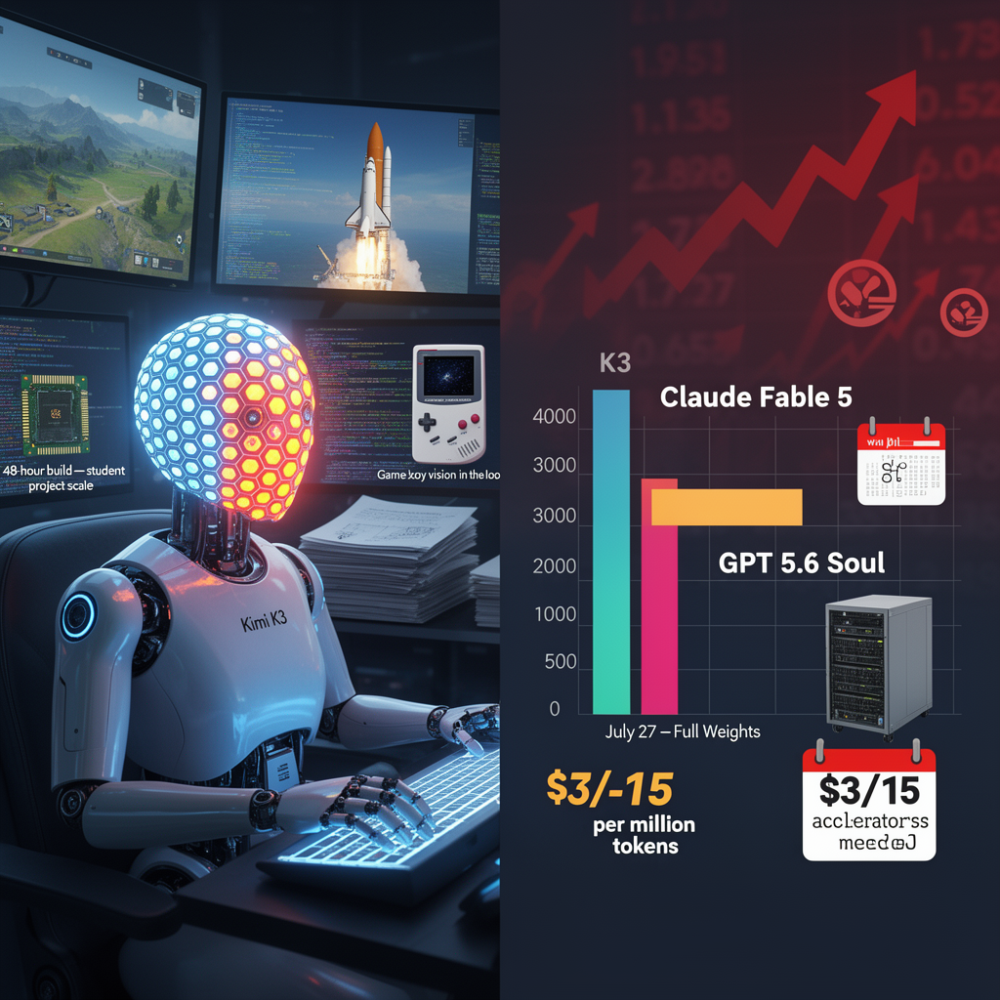

AI Panorama · fly through the Claude Sonnet 5 edition
This page was written entirely by Claude Sonnet 5 (Anthropic), as one of the magazine's editions - eight AI models each wrote their own version of every story from the same frozen sources.
The same story in other editions: GPT-5.6 Terra Gemini 3.7 Flash Grok 4.6 DeepSeek V4 Pro GLM 5.3 Qwen 3.8 Max Kimi K2.6
Moonshot AI's 2.8-trillion-parameter Kimi K3 topped a major coding benchmark and rivals frontier US models, with full open weights due July 27, 2026.

On July 17, 2026, Chinese AI company Moonshot released Kimi K3, an open-weight model with 2.8 trillion parameters — the largest open-weight model announced to date. Moonshot says full weights will be downloadable from July 27, letting companies run and modify the model on their own servers instead of only through Moonshot's app.
What made the release notable wasn't just size. On Arena AI's front-end code arena, where developers ask models to build websites and interfaces and then vote on the results, K3 came in first. Source accounts of the exact numbers differ slightly: one report put K3 at 1,679 points against Claude Fable 5's 1,631 and GPT 5.6 Soul's 1,618, while another cited K3 at 76% success against Fable 5's 63%. Both agree K3 finished ahead of the leading US closed models, and that Moonshot's previous model, Kimi K2.6, had sat in 18th place. On Artificial Analysis's intelligence index, K3 scored 57, close to Claude Opus 4.8 (56) and GPT 5.6 Terra (55), with only Claude Fable 5 and GPT 5.6 Soul clearly ahead.
Moonshot doesn't claim K3 wins everything. The company says it still trails Fable 5 and GPT 5.6 Soul in overall user experience and some broader tasks. Reviewer Wes Roth found results varied sharply depending on how the model was accessed: prompts run through the kimi.com browser interface produced polished game demos, while the same prompts run through Moonshot's coding tool or API were noticeably weaker — suggesting the surrounding software, not just the model, still matters.
## Built for long jobs, not just chat
K3 is designed to work for hours largely unsupervised: inspecting code, planning changes, using tools, checking its own work, and continuing. Moonshot calls this ability to look at a screen and correct itself "vision in the loop." In demonstrations, K3 built a 3D open-world game in a browser, simulated China's Long March 10 rocket, built a Game Boy Advance emulator, and reportedly designed a computer chip in a 48-hour autonomous run using open-source tools — though reviewer Wes Roth noted the resulting chip was modest by commercial standards, more comparable to a strong student project than an industrial design. Moonshot also says K3 reproduced an astrophysics analysis, reviewing over 20 papers and writing more than 3,000 lines of code in about two hours, work the company says would normally take a team one to two weeks.
Technically, K3 uses a mixture-of-experts design with 896 specialized sections, only 16 of which activate for any given query, plus new attention mechanisms Moonshot calls Kimi Delta attention, which the company says make it 2.5 times more efficient to scale than its predecessor, Kimi K2. It was trained using lower-precision number formats (MXFP4 weights, MXFP8 activations) to ease hardware demands — though Moonshot still recommends at least 64 AI accelerators to run it, far beyond home computer capacity.
## Price and politics
K3 costs $3 per million input tokens uncached (30 cents cached) and $15 per million output tokens — roughly half GPT 5.6 Soul's output price and well below Claude Fable 5's roughly $10/$50. One benchmark tracker cited by Matthew Berman found K3's cost advantage partly offset because it uses about twice as many tokens to complete the same task as GPT 5.6 Soul, landing at similar effective cost.
The release rattled markets: shares in Chinese rivals Zhipu (
Mixture of expertsOpen-weight modelModel distillationContext window
kimi-k3moonshot-aiopen-weight-modelschina-ai-raceai-benchmarksmixture-of-experts